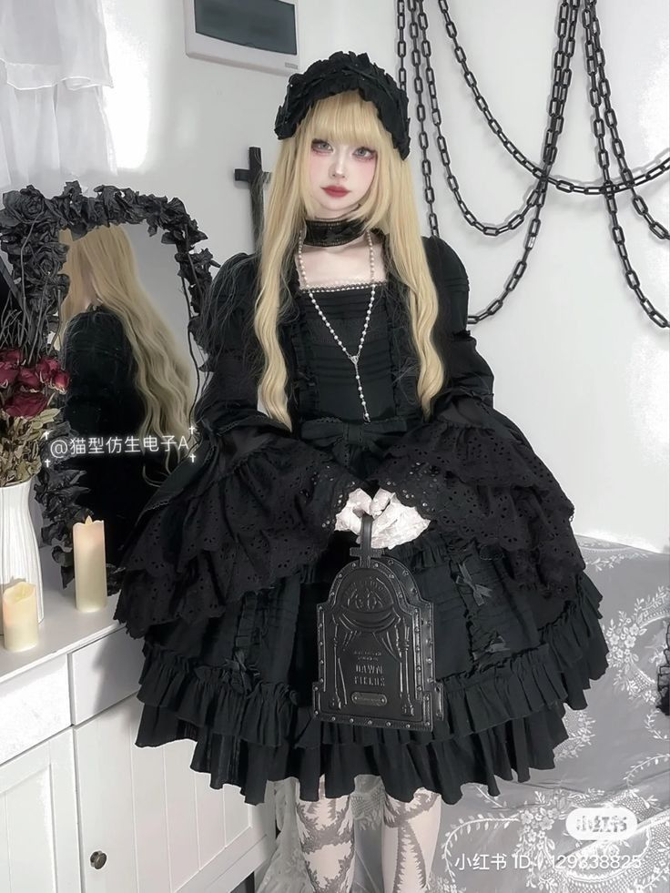
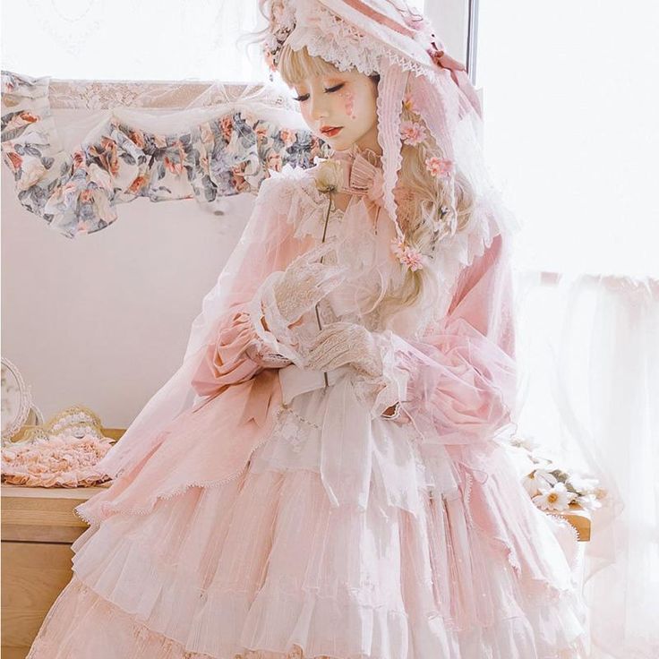
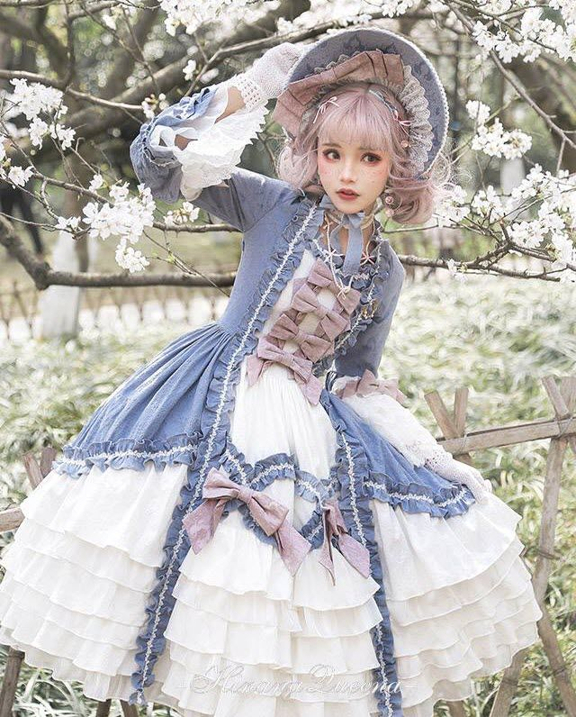

"Лолита" - это уличная мода, зародившаяся в Японии, но в настоящее время распространившаяся по всему миру с большим количеством поклонников за рубежом.
Мода Лолиты имеет множество своих собственных уникальных субкультур, основанных на этом стиле, и поэтому то, что квалифицируется как стиль Лолиты, может сильно различаться. Однако одежда в основном вдохновлена викторианской модой и стилем рококо. Мода на Лолиту находится под сильным влиянием и поддерживается широкой общественной субкультурой.
Несмотря на название, мода на "Лолиту" не основана на "Лолите" Набокова, а вдохновлена элегантным, милым и несексуальным идеалом. Это также не считается "кукольной" модой, и поэтому многие, кто носит одежду в стиле Лолиты, считают термин "куклоподобная" или "живая кукла" оскорбительным.
Мода в стиле Лолиты была популярна в Японии в 1990-х и 2000-х годах, но в 2010-х годах ее популярность пошла на убыль, поскольку альтернативная мода разнообразилась, а молодое поколение осваивало новые стили. Некоторые факторы, способствующие этому спаду, включают переход к более повседневному образу в западном стиле, распространение бесполой моды и появление небольших и более доступных брендов, ориентированных на более широкую аудиторию.
  Наряды в стиле Лолиты часто требуют много деталей, чтобы считаться нарядом в стиле лолиты. Эти элементы включают в себя юбку, блузку, головной убор, подъюбник и шаровары, одежду для ног, такую как носки и колготки, и туфли.
Для стиля "лолита" важны подходящие темы и цвета. Многие модели в стиле "лолита" содержат какой-либо предмет или тему, и важно последовательно использовать эти темы при создании наряда. Цвета и стили различаются в зависимости от подстиля. В моде лолиты присутствуют почти все цвета, хотя некоторые встречаются реже, чем другие. Самыми популярными цветами в моде лолиты являются белый, черный, слоновая кость/кремовый, розовый и голубой.